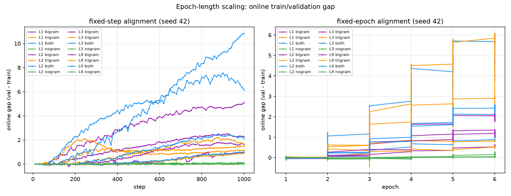
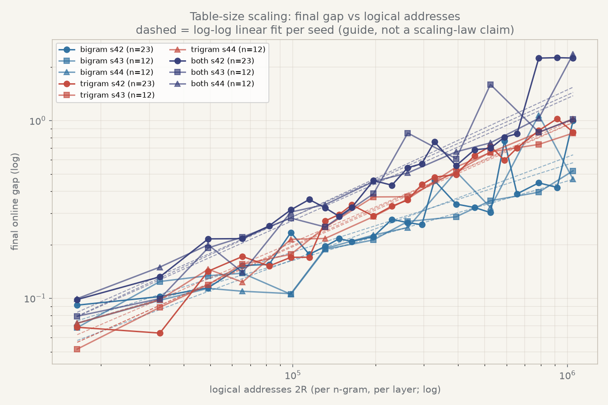
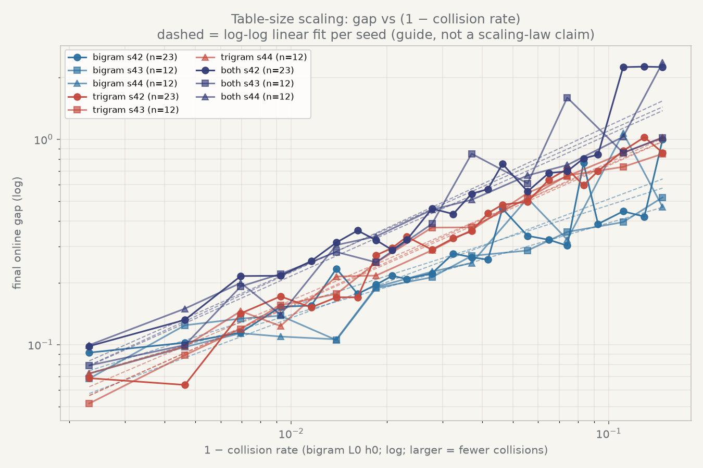
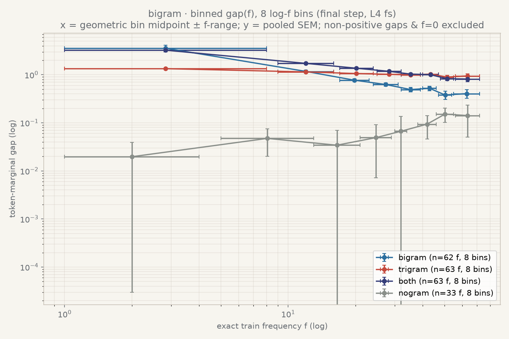
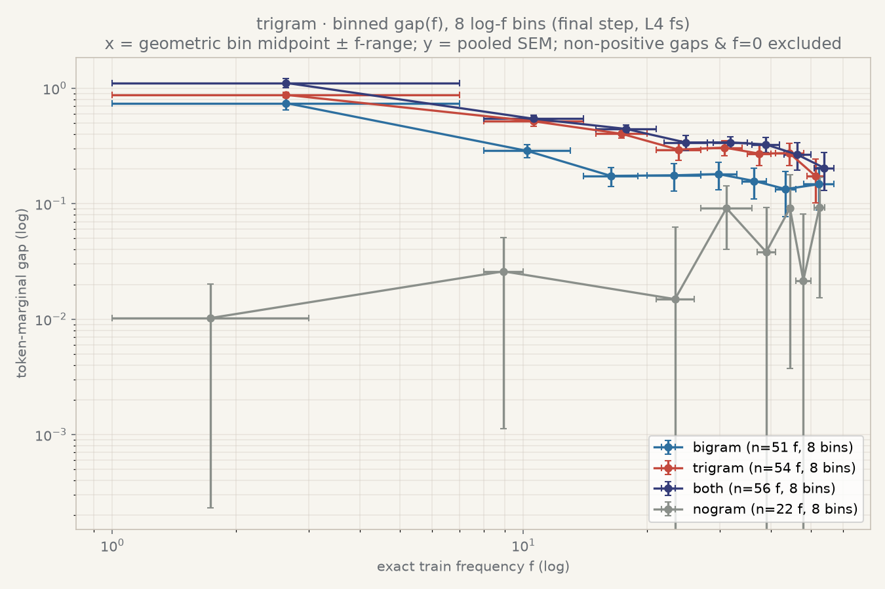
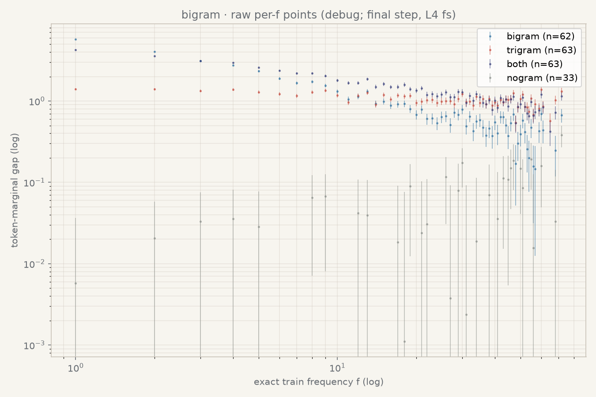
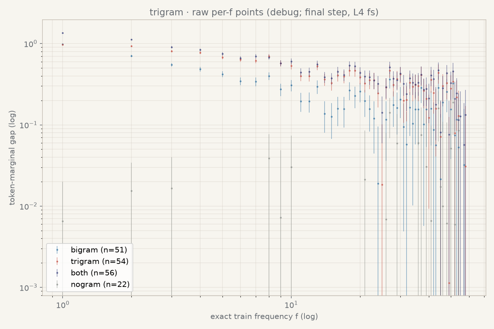

实验线：T-scaling（极简 setting 下的 epoch length / exact frequency / table size）
状态：🟢 seed 42 正式 full grid 与 seed 43/44 三 seed 复现（epoch / table / frequency 三轴）均已完成；多 seed 分析与 H1–H4 猜想检验已回填 （见 §7）。带跨 seed 变异度的结论可写成 seed-stable / seed-sensitive / identifiability-limited；仍缺 frequency 的 epoch-dependent fit 与 加密点密集曲线。
数据源：
data/runs_scaling/。正式结果只使用data/runs_scaling/<run_id>_fixed/；历史pilot_*、basic_*和 safety 目录不混入正式三轴汇总。代码：
tasks/s1_scaling_three_axis/。
在唯一极简 setting（vanilla nanoGPT 8L·6H·768D、learned absolute position、LayerNorm、tied embedding、input/wte n-gram 注入、自然语料）下， 本附录分别检查：
L 在 fixed-step 与 fixed-epoch 两种对齐下如何影响 gap；f 与 gap 是否符合两因素形式
G(f) = A f^(-β) [1 − exp(−c f^γ)]；本报告中的历史 gap 数值来自同一 fixed train probe 和 fixed validation probe 上的
fixed_val_loss − fixed_train_loss；这些结果保留用于历史追溯，但该口径现已标记为
exposure-contaminated 诊断，不再作为主结论。新的标准 gap 使用
train_log.jsonl 的在线训练 batch：val_loss − train_loss。frequency 轴只做自然语料下的
observational consistency 检验，不是 f 的因果证明。所有数值均为
seed 42、对应 run 的最终 step；没有多 seed 时，不宣称误差条、指数或单调
关系已经稳定。
| 项 | 值 |
|---|---|
| backbone | vanilla nanoGPT，8L / 6H / 768D，learned absolute position，LayerNorm，tied embedding |
| n-gram 注入 | input / wte over-encoding |
| 模块臂 | bigram、trigram、both、nogram |
| table optimizer | RMSProp，无动量，table_betas=(0.0, 0.99) |
| table learning-rate scale | table_lr_scale=2.0，实际 table lr 为 0.008 |
| backbone optimizer | AdamW，betas (0.8, 0.95)，lr 0.004 |
| 数据 | shard 1 fixed 顺序 replay；train / val shard 完全不重叠 |
| compute | bf16 autocast + torch.compile（S1 正式波次的实际 run contract） |
| 历史测量 | fixed train probe（4 batches）+ fixed validation；probe SHA256 为 38d1254a827759d6 |
| 当前主测量 | online train loss + fixed validation，即 val_loss − train_loss；fixed probe 仅诊断 |
| cadence | epoch 与原始 table 网格 online validation 每 10 步；table 加密取点仅在最终步监测；frequency 轴 exact-frequency 每 100 步；fixed probe 仅在诊断 run 中记录 |
| 结果命名 | data/runs_scaling/<run_id>_fixed/ |
普通 epoch/table 网格不计算 exact-frequency，也不传 --freq_index，只保留
在线 train/val 与 online gap 指标；fixed-probe 仅作诊断；frequency 轴单独使用
freq_{arm}_{fs,fe}_fixed 八个 run，并开启 exact-frequency 观测。
正式结果共 seed 42：109 个 run + seed 43/44：各 76 个 run = 261 个正式 run：
| 网格 | seed 42 | seed 43/44 各 | run 范围 | 最终 step |
|---|---|---|---|---|
| epoch · fixed-step | 16 | 16 | ep_L{1..4}_{bigram,trigram,both,nogram}_fs[_s{43,44}]_fixed |
1000 |
| epoch · fixed-epoch | 16 | 16 | ep_L{1..4}_{bigram,trigram,both,nogram}_fe[_s{43,44}]_fixed |
L1/L2/L3/L4 = 252/504/1008/2022 |
| table size | 69 | 36 | seed 42：23 个 mult × 3 module；seed 43/44：12 个 mult（1,2,3,4,6,8,12,16,24,32,48,64）× 3 module | 1000 |
| frequency axis | 8 | 8 | freq_{bigram,trigram,both,nogram}_{fs,fe}[_s{43,44}]_fixed |
fs=1000，fe=2022 |
261 个正式 run 均通过统一 QC：
summary.json 存在且 run id、步数、epoch batches 与命名一致；compute_dtype=bf16、torch_compile=true、RMSProp (0.0,0.99)、
table_lr_scale=2.0；38d1254a827759d6；table_occupancy.json；独立的 bb_safety_L1_nogram_5000 不是这 109 个正式 run 的一部分：它使用
旧 cadence（50 步）和 fp32、无 compile，只作为长训 backbone gap 的量级
参考。它在 step 5000 的 fixed train / val / gap 为
0.0065 / 16.666 / +16.660。因此正式 nogram 对照不能被假设为恒等于零。
L4 按用户决策定义为 337 device batches/epoch，即 shard 1 的完整
24,264 / 72 个 batch；L1/L2/L3 为同一 shard 流的嵌套前缀
42/84/168。正式结果中的 epoch batches 为：
| L | batches/epoch | fixed-step target | fixed-epoch target |
|---|---|---|---|
| L1 | 42 | 1000 | 252 |
| L2 | 84 | 1000 | 504 |
| L3 | 168 | 1000 | 1008 |
| L4 | 337 | 1000 | 2022 |
下表来自 ep_{L}_{module}_{align}_fixed 的最终 probe 记录；每个格子的
step 分别由上表给出。
| L | bigram fs | trigram fs | both fs | nogram fs | bigram fe | trigram fe | both fe | nogram fe |
|---|---|---|---|---|---|---|---|---|
| L1 | 5.0698 | 1.4811 | 10.8446 | 0.1223 | 0.6031 | 0.4810 | 1.0079 | 0.0639 |
| L2 | 2.2394 | 1.1632 | 6.0760 | 0.0289 | 1.1779 | 0.8657 | 1.8853 | 0.0664 |
| L3 | 1.6309 | 1.5637 | 2.0769 | 0.0072 | 1.8447 | 2.2188 | 5.9113 | 0.0500 |
| L4 | 0.9406 | 0.8682 | 0.9696 | −0.0087 | 1.1759 | 6.0557 | 2.2658 | 0.1974 |
both 的 raw gap 从
ep_L1_both_fs_fixed 的 +10.8446 @ step 1000 降到
ep_L4_both_fs_fixed 的 +0.9696 @ step 1000；但 no-ngram 基线也
随 L 改变，主比较应使用图中的
ΔG = G(module) − G(no-ngram)，不能只比较 raw gap。ep_L3_both_fe_fixed 在 step 1008 为 +5.9113，而
ep_L4_trigram_fe_fixed 在 step 2022 为 +6.0557。图：
figs/epoch_gap_by_alignment.png：16 个 epoch run 的历史 fixed-probe gap；figs/epoch_deltaG_fs.png：fixed-step 下相对各 L no-ngram 的 ΔG；figs/epoch_final_gap.csv：逐 run 最终 gap 表。所有 table run 固定 L4（337 batches/epoch）、1000 steps、seed 42，唯一变化
是 table_mult。共 23 个实测规模；bigram/trigram/both 各 23 点。原始 7
个规模的 21 个 run 使用 dense monitor（每 10 步），其余 48 个加密 run 使用
sparse monitor（只在最终步 1000 记录 gap）。每个 n-gram、每层、两组 hash
的 logical addresses 为
2R = 16,384 × table_mult。
table_mult |
logical 2R |
bigram online gap | trigram online gap | both online gap |
|---|---|---|---|---|
| 1 | 16,384 | 0.0914 | 0.0686 | 0.0983 |
| 2 | 32,768 | 0.1021 | 0.0636 | 0.1319 |
| 3 | 49,152 | 0.1145 | 0.1419 | 0.2157 |
| 4 | 65,536 | 0.1527 | 0.1717 | 0.2163 |
| 5 | 81,920 | 0.1550 | 0.1517 | 0.2552 |
| 6 | 98,304 | 0.2342 | 0.1699 | 0.3142 |
| 7 | 114,688 | 0.1764 | 0.1700 | 0.3592 |
| 8 | 131,072 | 0.1958 | 0.2722 | 0.3225 |
| 9 | 147,456 | 0.2163 | 0.2958 | 0.2887 |
| 10 | 163,840 | 0.2086 | 0.3351 | 0.3238 |
| 12 | 196,608 | 0.2223 | 0.2897 | 0.4594 |
| 14 | 229,376 | 0.2776 | 0.3294 | 0.4324 |
| 16 | 262,144 | 0.2663 | 0.3569 | 0.5429 |
| 18 | 294,912 | 0.2591 | 0.4364 | 0.5714 |
| 20 | 327,680 | 0.4594 | 0.4801 | 0.7584 |
| 24 | 393,216 | 0.3386 | 0.4962 | 0.5570 |
| 28 | 458,752 | 0.3239 | 0.6350 | 0.6847 |
| 32 | 524,288 | 0.3032 | 0.7170 | 0.6978 |
| 36 | 589,824 | 0.7663 | 0.5966 | 0.8062 |
| 40 | 655,360 | 0.3866 | 0.6999 | 0.8418 |
| 48 | 786,432 | 0.4457 | 0.8780 | 2.2445 |
| 56 | 917,504 | 0.4199 | 1.0232 | 2.2568 |
| 64 | 1,048,576 | 0.9985 | 0.8606 | 2.2462 |
表中数值来自 tbl_{mult}_{module}_fixed 的 final online gap
val_loss − train_loss @ step 1000；其中 train loss 是当前在线训练 batch，
val loss 是同一步的 fixed validation。第一轮加密取点为
mult=48,24,12,6,3 的 15 个 run，第二轮新增
mult=56,40,36,28,20,18,14,10,9,7,5 的 33 个 module run（包含
both）。所有 sparse run 只保存最终点，不产生中间曲线，因此没有把稀疏
观测伪装成完整训练轨迹。seed 42 下三条 module 曲线总体随 table 增大，
但并非逐点单调；both 在大表区的 gap 最大（tbl_56_both_fixed，
+2.2568）。这支持“更大的 table 保留更多低频 context-specific 更新、
从而可能放大 gap”的候选机制；它不是仅凭参数量就能证明的因果结论。
同一批 occupancy 结果中，bigram layer-0/hash-0 的 collision rate 从
0.9977（16,384 addresses）降到 0.8521（1,048,576 addresses），而
occupancy 从约 1.0 降到 0.9983。该 collision 方向与 gap 的上升方向一致，
但只有一个 seed，且 collision 与 table size 共变，尚不能区分两者的独立
贡献或证明 saturation。
加密取点解决的是横轴取点过稀，不会消除单 seed 的纵轴噪声。例如 bigram
在 mult=6→7、24→28 处回落，trigram 在 32→36、56→64 处回落；
因此双对数图看起来不完美线性，主要是单 seed 波动与强碰撞区的非理想
响应，不是简单增加横轴点数就能修复。图中的虚线只是 log-log
guide，不是已确认的幂律。
图和摘要（均纳入 69 个 table 点）：
figs/table_gap_vs_2R.png：双对数坐标，使用 final online gap；虚线仅为
log-log guide，不是 scaling-law claim；figs/table_gap_vs_collision.png：横轴使用 1 − collision_rate 的
双对数视图，因为 collision rate 本身接近 1，不能直接取对数；figs/table_gap_vs_2R.html / figs/table_gap_vs_collision.html：交互版；
可点击 legend 隐藏/显示 module 曲线，并分别切换 x/y 轴为 linear 或 log；figs/table_summary.csv；table_occupancy.json 位于每个 tbl_*_fixed 目录。为检查 table-size 效应是否来自“某些高命中 row”，额外保存
final_model.pt，在固定 train/val probe 上离线重算 layer 0、hash 0/1
的逐 row train/val token loss。row-level gap 只在 train/val 都命中的 row
上定义，因此它是 overlap subset 的诊断统计，不替代上面的全 probe
final_fixed_gap。
对 table_mult=64,32,16,8,4,2,1 的 7 档结果，按 train-token 数加权的
overlap-row mean gap 分别约为 1.883, 0.267, 0.201, 0.159, 0.102,
0.052, 0.043。但在每个 table size 内，gap 与 row 的 distinct-context
load 的加权 log-slope 都接近 0（加权 R² 约为 0），以实际 train-token
hits 为横轴时同样没有可辨识的趋势。也就是说，当前 pilot 支持
“table size 改变整体 gap，而单个 row 的命中次数/碰撞负载不是主要的一维
解释变量”；它还不能排除 context identity、训练历史或 module interaction
的作用。图 figs/rowlevel_gap_vs_table_size.png 同时展示 row-level
分布、load 分箱曲线，以及与正式 fixed gap 的对照。
frequency 轴使用 L4 + 1M table 的
freq_{bigram,trigram,both,nogram}_{fs,fe}_fixed。历史最终 fixed-step
frequency 图取 step 1000 的 freq_{module}_fs_fixed/exact_freq_loss.jsonl；
满足 token_count >= 1024 且 distinct_contexts >= 32 的 train/val
共同 exact-f 值才进入 marginal gap。novel 和没有 train loss 的 bucket
不定义 gap，也不进入 log-fit。
freq_gap_bigram_final.png 和 freq_gap_trigram_final.png 显示：在 seed 42
的 L4 fixed-step 截面中，bigram 与 trigram branch 的 gap 通常随 exact
frequency 增大而下降；nogram 大多围绕零附近波动。高频端的点更噪，不能
把局部反弹写成单调性破坏或新的机制。
canonical 图使用从 eligible per-f 条目直接构造的 8 个等计数 log-f bins：
每个点的横坐标是 bin 内 exact-f 的几何中点，横向误差棒表示该 bin 的
[f_min, f_max] 范围，纵向误差棒是按 token 数加权后的 pooled SEM。
freq_gap_bigram_final_raw.png 和 freq_gap_trigram_final_raw.png 保留全部
eligible per-f 点及其 SEM，作为用户要求的 debug 原图；它们故意较为拥挤，
不作为主展示图。
分析脚本对 L4 fixed-step 的 bigram/trigram module 做 token-marginal
raw-space fit：
G(f) = A f^(-β) [1 − exp(−c f^γ)]。
| branch | module run | A | β | c | γ | eligible f | positive-fit f |
|---|---|---|---|---|---|---|---|
| bigram | freq_bigram_fs_fixed |
7.594 | 0.752 | 1.394 | 0.755 | 63 | 62 |
| bigram | freq_trigram_fs_fixed |
1.560 | 0.126 | 2.293 | 0.776 | 63 | 63 |
| trigram | freq_bigram_fs_fixed |
1.147 | 0.544 | 1.980 | ~0 | 57 | 51 |
| trigram | freq_trigram_fs_fixed |
1.922 | 0.560 | 0.709 | 0.748 | 57 | 54 |
完整参数、标准误以及每个被排除的 exact-f 和原因记录在
figs/fit_manifest.json。拟合只保留 positive gap；不满足 train/val
token/context 纳入门槛的频率也被逐项记录。trigram branch 的
freq_bigram_fs_fixed 拟合出现 γ≈0 且参数标准误很大，说明单 seed /
当前覆盖下可辨识性不足。因此这些数字只能作为形状的 exploratory summary，
不能作为稳定的 A, β, c, γ 估计，也不能替代计划中的 epoch 截面、
profile-likelihood 和 seed 43/44。
以下全部基于 online gap 主口径（val_loss − train_loss，train_log.jsonl），
三 seed（42/43/44）汇总。跨 seed 变异度用 cv = std/mean 表示；
结论强度按 plan-5 约定标注为 seed-stable / seed-sensitive /
identifiability-limited / not yet causal。
ΔG = G(module) − G(no-ngram)（online final gap）在全部
24/24 个 (L × module × 对齐) 组合 × 3 seed 中均为正，方向 seed-stable。
fixed-step（1000 步，ΔG，三 seed）：
| L | bigram | trigram | both |
|---|---|---|---|
| L1 | +4.99 / +2.14 / +1.50 | +1.37 / +1.11 / +1.43 | +10.72 / +2.67 / +11.03 |
| L2 | +2.27 / +1.54 / +1.60 | +1.13 / +4.02 / +4.72 | +6.14 / +4.04 / +6.73 |
| L3 | +1.60 / +1.05 / +1.03 | +1.64 / +1.63 / +2.38 | +2.10 / +2.59 / +5.24 |
| L4 | +0.95 / +0.44 / +0.41 | +0.88 / +1.78 / +0.94 | +0.98 / +1.00 / +2.22 |
fixed-epoch（6 epoch，ΔG，三 seed）：
| L | bigram | trigram | both |
|---|---|---|---|
| L1 | +0.55 / +0.81 / +0.60 | +0.42 / +0.66 / +0.87 | +0.95 / +1.73 / +1.88 |
| L2 | +1.13 / +1.03 / +1.07 | +0.81 / +0.63 / +0.86 | +1.83 / +2.18 / +2.14 |
| L3 | +1.81 / +1.02 / +1.00 | +2.21 / +2.19 / +2.64 | +5.89 / +4.65 / +4.09 |
| L4 | +0.98 / +2.00 / +0.87 | +5.90 / +5.72 / +5.56 | +2.08 / +5.45 / +5.47 |
not yet causal）。图：figs/epoch_deltaG_fs_multiseed.png（逐 seed 点 + 均值）；汇总表
figs/epoch_final_gap.csv（96 行，三 seed）。
table 轴三 seed（12 个公共 mult × 3 module，online final gap @1000）：
trigram（seed-stable，单调）：
| mult | s42 | s43 | s44 | cv |
|---|---|---|---|---|
| 1 | 0.069 | 0.052 | 0.072 | 14% |
| 4 | 0.172 | 0.155 | 0.123 | 13% |
| 8 | 0.272 | 0.251 | 0.217 | 9% |
| 16 | 0.357 | 0.372 | 0.361 | 2% |
| 24 | 0.496 | 0.517 | 0.547 | 4% |
| 32 | 0.717 | 0.665 | 0.661 | 4% |
| 48 | 0.878 | 0.734 | 0.857 | 8% |
| 64 | 0.861 | 0.849 | 1.021 | 9% |
bigram：mult 8–32 稳（cv 2–13%），但 mult=6/24/48/64 个别点 cv 25–48% （seed-sensitive 点）；总体随 mult 上升但无干净幂律。
both（不可定量）：mult≥16 后 cv 普遍 24–45%（如 mult=32：0.698/1.595/0.748； mult=48：2.244/0.860/1.028）。双表干涉导致 both 在大表区不可定量， 不能合并进单一幂律公式（见 §7.4）。
图：figs/table_gap_vs_2R.png（双对数）/ figs/table_gap_vs_collision.png
/ 交互版 .html；汇总 figs/table_summary.csv（141 行，三 seed）。
对 L4 + 1M 锚点的 freq_{module}_fs[_s{43,44}]_fixed（step 1000 截面，
token-marginal）做 raw-space 拟合
G(f) = A·f^(−β)·[1 − exp(−c·f^γ)]，三 seed 参数 cv：
| branch / module | β（mean±sd） | γ | A | c |
|---|---|---|---|---|
| bigram/bigram | 0.713±0.029（cv 4%） | cv 11% | cv 35% | cv 6% |
| bigram/trigram | 0.128±0.005（cv 4%） | cv 7% | cv 33% | cv 6% |
| trigram/bigram | 0.483±0.044（cv 9%） | cv 141% | cv 38% | cv 91% |
| trigram/trigram | 0.673±0.088（cv 13%） | cv 6% | cv 64% | cv 39% |
identifiability-limited，不写绝对值。
完整参数、标准误与逐 f 排除原因见 figs/fit_manifest.json（12 个拟合）。epoch 网格（相对各 L no-ngram 的 ΔG）上的交互项
I = ΔG_both − ΔG_bigram − ΔG_trigram：
table 网格上的交互（raw gap，无 nogram 对照）： mult≤40 时 I 普遍为小幅负值（亚可加，−0.03~−0.56），三 seed 同号； mult≥48 时 I 跨 seed 剧烈变号（mult=48：+0.92/−0.27/−0.90）—— 大表区双表干涉 seed-sensitive。
结论：模块交互 I 显著非零且方向/幅度随 seed、对齐方式、表大小变化，
因此 不允许把 bigram+trigram 合并成单一公式解释；both 臂只作对照，
不进任何合并 scaling 定律。
| 猜想 | 判定 | 依据 |
|---|---|---|
| H1 两因素频率律 | β seed-stable（cv 4–13%）；A/c/γ identifiability-limited | §7.3，三 seed 12 个拟合 |
| H2 epoch 对齐律 | 方向 seed-stable（24/24 同号）；幅度 fixed-step seed-sensitive、fixed-epoch 稳 | §7.1 |
| H3 table saturation | 否证：trigram 幂律上升无饱和（≤1M）；both 大表区不可定量 | §7.2 |
| H4 模块交互 | 显著且 seed-sensitive，不允许合并单公式 | §7.4 |
以上全部为 observational 证据；epoch/table 的方向性结论已满足
"三 seed 同号才写方向稳定"的登记标准，但不升级为因果 claim
（not yet causal）。
从仓库根目录重建当前三轴结果：
.venv/bin/python tasks/s1_scaling_three_axis/analysis/analyze_scaling_epoch.py \
data/runs_scaling
.venv/bin/python tasks/s1_scaling_three_axis/analysis/analyze_scaling_table.py \
data/runs_scaling
.venv/bin/python tasks/s1_scaling_three_axis/analysis/analyze_scaling_frequency.py \
data/runs_scaling
当前交付完成的是：seed 42 正式 full grid、seed 43/44 三 seed 复现
（epoch 96 / table 72 / frequency 16 个新 run）、table 加密最终取点、
row-level recovery pilot、固定 probe / exact-f / occupancy 测量、产物 QC、
三轴图、多 seed 汇总与 H1–H4 猜想检验（§7）、本附录回填。
尚未完成的是 frequency 的 epoch-dependent fit（epoch 3 / epoch 6 截面）、
跨 seed profile-likelihood，以及将三轴结果提升为主报告的最终 scaling claim；
在这些完成前，不更新 docs/report/index.html 的主线结论。






